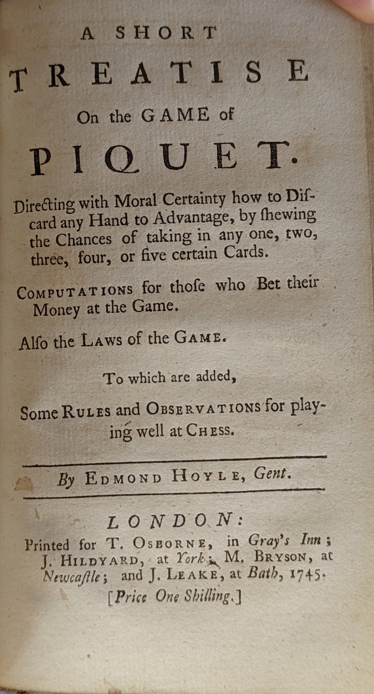

A Descriptive Bibliography of Edmond Hoyle
Copyright © 2014-26 by David Levy
(page updated 2025-01-11)User Guide
Piquet.1.2
A Short Treatise on the Game of Piquet, printed for T. Osborne et al, first London edition, second issue, 1745.
 |
Title: | A SHORT | TREATISE | On the GAME of | PIQUET. | Directing with Moral Certainty how to Diſ-|card any Hand to Advantage, by ſhewing | the Chances of taking in any one, two, | three, four, or five certain Cards. | Computations for thoſe who Bet their | Money at the Game. | Alſo the Laws of the Game. | To which are added, | Some Rules and Observations for play-|ing well at Chess. | [rule] | By Edmond Hoyle, Gent. | [rule] | LONDON: | Printed for T. Osborne, in Gray's Inn; | J. Hildyard, at York; M. Bryson, at | Newcaſtle; and J. Leake, at Bath, 1745. | {Price One Shilling.} |
| Collation: | 12o: [A]2(±A1) B–D12 E4 [$1–5 (−E3,4) signed]; 42 leaves, pp. [4 ] [1] 2–79 [80] |
| Contents: | Signature (Page) Reference | Contents | Signature (Page) Reference | Running Titles |
| A1r | title | autograph of Edmond Hoyle | |||
| A1v | blank | |||
| A2r–A2v | see Piquet.1.1 | |||
| B1r–E4v (1–80) | see Piquet.1.1 | B1v–E4v (2–80) | see Piquet.1.1 |
| Publisher: | Thomas Osborne |
| Printer: | John Watts (ornaments) |
| Notices: | 1745-10-26 London Evening Post: "A Treatise on the Game of Piquet , price 1s." Advertised with Whist.6, Quadrille.1.2, Backgammon.2, Laws.2, and Osborne collection. |
| Price: | 1s. (title, advertisement) |
| References: | ESTC N22954, Horr 649, Rather 21 |
| Copies Seen: | CLU-C [*GV1295.P7H8.1745] (ECCO) |
| Copies Seen in Collections: | O [Jessel f.544(3)] (see Osborne.A); PPL [Iu Hoyl Allen 333 no.3] (see Osborne.A); Levy [2097] (see Osborne.A) |
| Notes: | Jessel 779a in his handwritten corrections to his bibliography. |